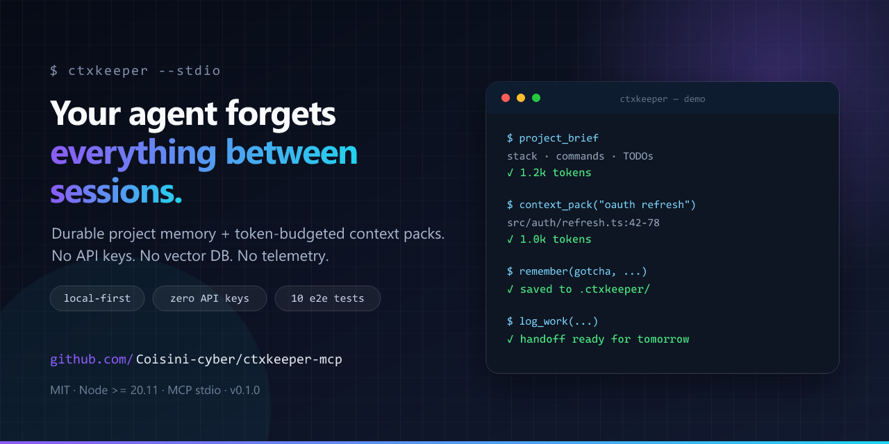

Press kit
Everything needed to write about ctxkeeper. No approval required.
Boilerplate
One line: Local-first MCP server that gives coding agents durable project memory and token-budgeted context packs.
Two lines: ctxkeeper stores decisions, gotchas, commands and TODOs in an append-only log next to the repository, and returns only the relevant code windows with path:line citations instead of whole files. No API keys, no vector database, no telemetry.
Paragraph: AI coding agents are good at using tools and bad at remembering projects. Every new session re-explores the repository and re-asks for context that was already settled. ctxkeeper is a local stdio MCP server that adds a durable project memory and a token-budgeted context packer. It runs as one Node process, keeps state in a plain JSONL file, and exposes eight tools: project_brief, context_pack, recall, remember, forget, todo, log_work, and status. It is MIT licensed and has 11 end-to-end tests over real stdio.
Facts
| Name | ctxkeeper (one word, lowercase) |
|---|---|
| Repository | Coisini-cyber/ctxkeeper-mcp |
| Website | coisini-cyber.github.io/ctxkeeper-mcp |
| License | MIT |
| Runtime | Node.js ≥ 20.11, stdio MCP |
| Dependencies | Official MCP SDK + Zod; no native modules |
| Data | Local JSONL; no network, accounts, or telemetry |
| Status | v0.1.0, pre-1.0 |
Assets
Social card (1280×640) — right-click to download:

Banner (1200×320): assets/banner.svg

Terminal demo: see the home page. Screenshots of real output are welcome; the CLI supports --brief, --pack, and --doctor.
Angles
- Context engineering: the MCP ecosystem is saturated with connectors; the scarce layer is choosing what the model reads.
- Local-first AI tooling: durable memory without a vector database, API key, or cloud service.
- Cross-language retrieval: Chinese questions can retrieve English code through memory-to-code bridging.
- Agent handoff: what a coding agent should leave behind for the next session.
Contact
Use GitHub Issues for corrections and Discussions for questions. Please do not publish security issues; see SECURITY.md.